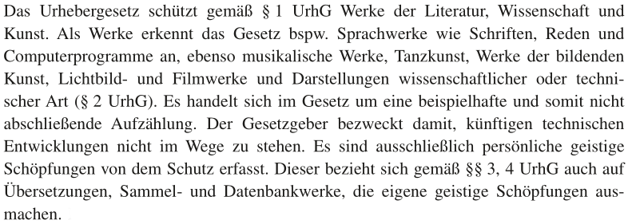

Urheberrecht
Die zentralen Fragen
Wann ist das Werk schützenswert?
Wer ist der Urheber?
Wie hoch ist der finanzielle Ausgleich für die verschiedenen Arten der Nutzung ?
Aspekte
Verwertungsgesellschaften
Urheber kann das Nutzungsrecht durch Vergabe von Lizenzen regeln (mehr dazu im 2. Vortrag)
Abgrenzung
Persönlichkeitsrecht
(z.B. Recht am eigenen Bild)
Gewerbliche Schutzrechte
Markenrecht
Patentrecht
Urheber ist der Schöpfer des Werkes
Haben mehrere Personen an einem Werk gewirkt spricht man von Miturhebern
Nicht Urheber sind Bearbeiter, Leute, die Anregungen oder Ideen geliefert haben oder Gehilfen

Medienzentrum Offenbach, Anwältin Frau Antonia Dufeu
Zu den folgenden Videos gibt es einen Prozess, der als Päzedenzfall in Sachen "Sampling" gilt.